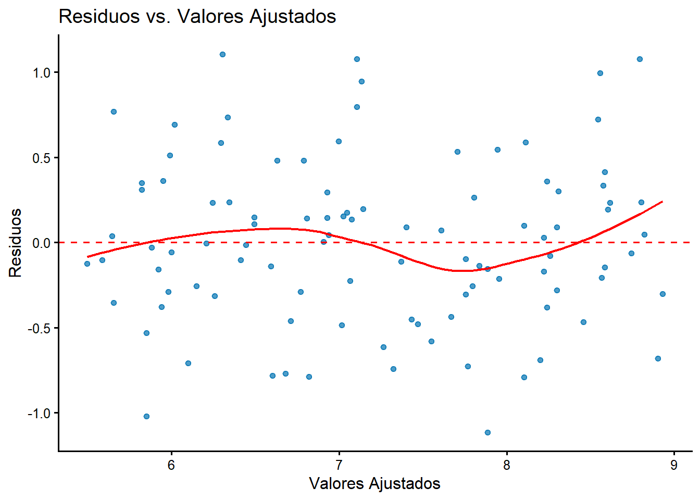
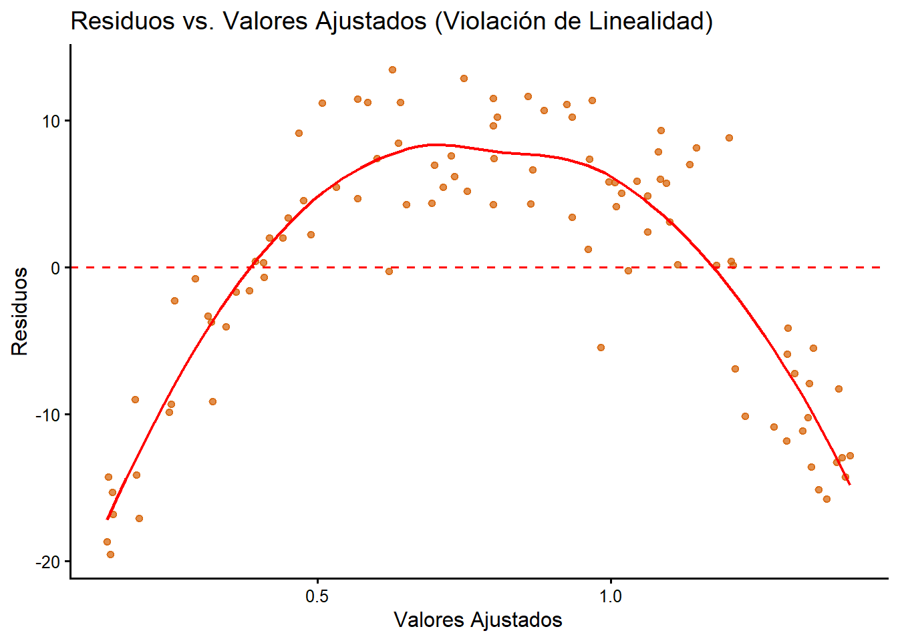
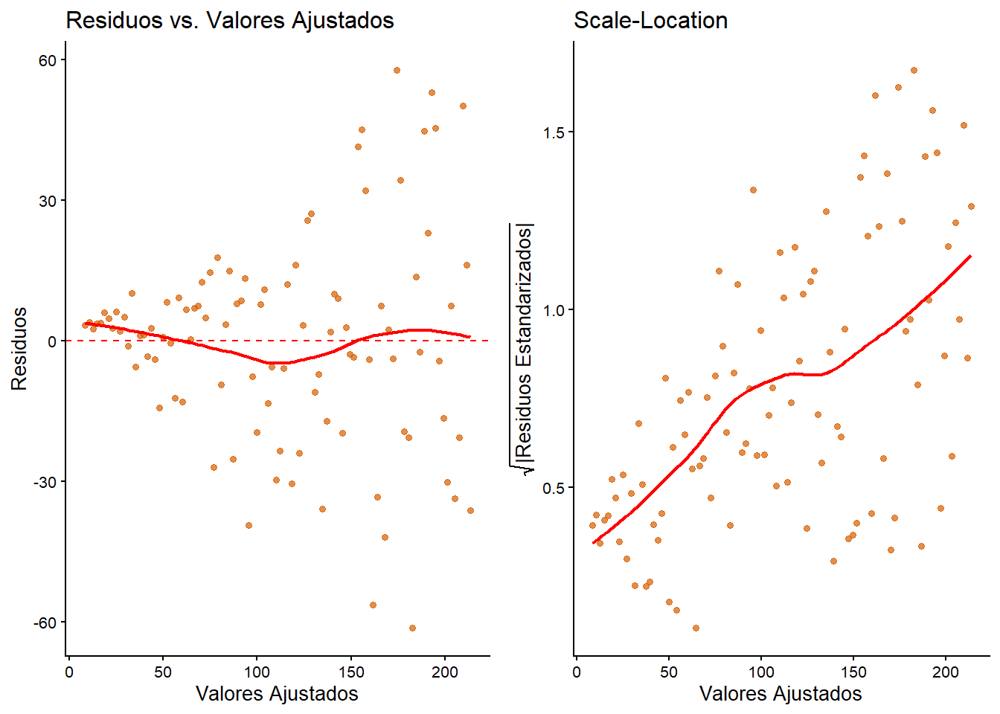

library(ggplot2)
set.seed(123) # Para reproducibilidad
# Simulación de datos
datos <- data.frame(
Tiempo_Estudio = round(runif(100, min = 5, max = 40), 1)
)
datos$Calificaciones <- round(5 + 0.1 * datos$Tiempo_Estudio + rnorm(100, mean = 0, sd = 0.5), 2)
# Visualización
ggplot(datos, aes(x = Tiempo_Estudio, y = Calificaciones)) +
geom_point(color = "#0072B2", alpha = 0.7) +
labs(
title = "Relación entre Tiempo de Estudio y Calificaciones",
x = "Tiempo de Estudio (horas/semana)",
y = "Calificaciones (promedio)"
) +
theme_classic(base_size = 14)
# Cuantificación (los objetos se guardan para usarlos en el texto)
covarianza <- cov(datos$Tiempo_Estudio, datos$Calificaciones)
correlacion <- cor(datos$Tiempo_Estudio, datos$Calificaciones)2 El modelo de regresión lineal simple
La regresión lineal constituye uno de los pilares fundamentales de la modelización estadística. Es, a menudo, el primer y más importante modelo predictivo que se aprende, no solo por su simplicidad e interpretabilidad, sino porque los conceptos que exploraremos aquí son la base sobre la que se construyen técnicas mucho más avanzadas, como el modelo de regresión lineal múltiple, los modelos lineales generalizados (GLM) o incluso conceptos utilizados en algoritmos de machine learning (Draper 1998).
En este capítulo, daremos el primer y más crucial paso en nuestro viaje por el modelado predictivo: el estudio del modelo de regresión lineal simple. Para ello, seguiremos el ciclo de vida completo de un proyecto de modelado: comenzaremos con la exploración visual y cuantitativa de los datos, formalizaremos después nuestras observaciones mediante el lenguaje matemático del modelo y sus supuestos, aprenderemos a estimar sus parámetros, realizaremos inferencias sobre ellos y, finalmente, diagnosticaremos la validez de nuestro modelo.
La comprensión profunda que desarrollaremos aquí es esencial, ya que los principios de estimación, inferencia y diagnóstico que aprenderemos son directamente escalables al modelo de regresión lineal múltiple, que exploraremos en el siguiente capítulo.
Objetivos de aprendizaje
Al finalizar este capítulo, serás capaz de:
- Comprender y aplicar el proceso de modelización estadística para un problema con una única variable predictora.
- Identificar y medir la correlación lineal entre dos variables como paso previo al modelado.
- Describir la formulación matemática del modelo de regresión lineal simple e interpretar el significado práctico de sus parámetros.
- Estimar los coeficientes del modelo mediante el método de mínimos cuadrados ordinarios (MCO) y entender su derivación matemática y propiedades.
- Realizar inferencias sobre los parámetros del modelo y evaluar su bondad de ajuste mediante el análisis de la varianza y el coeficiente de determinación R².
- Diagnosticar la adecuación del modelo, evaluando visual y analíticamente si se cumplen los supuestos del modelo lineal.
2.1 Exploración inicial: visualización y cuantificación de la relación
Antes de sumergirnos en la teoría de la regresión, debemos hacer lo que todo buen analista hace primero: observar y cuantificar la relación en los datos. Este paso exploratorio es fundamental para formular hipótesis y justificar la elección de un modelo lineal.
2.1.1 Visualización: el gráfico de dispersión
La herramienta más potente para examinar la relación entre dos variables continuas es el gráfico de dispersión (scatterplot). Nos permite intuir visualmente la forma, la dirección y la fuerza de la relación. Una inspección visual es siempre el punto de partida.
2.1.2 Cuantificación de la asociación: covarianza y correlación
Una vez que la visualización sugiere una tendencia, necesitamos métricas para cuantificarla.
2.1.2.1 Covarianza
La covarianza es una medida de la variabilidad conjunta de dos variables aleatorias, \(X\) e \(Y\). Nos indica la dirección de la relación lineal. La covarianza muestral, calculada a partir de nuestras observaciones \((x_i, y_i)\), es:
\[ \text{Cov}(x, y) = s_{xy} = \frac{\sum_{i=1}^{n}(x_i - \bar{x})(y_i - \bar{y})}{n-1} \]
El principal inconveniente de la covarianza es que su magnitud depende de las unidades de las variables, lo que la hace difícil de interpretar.
2.1.2.2 Coeficiente de correlación de Pearson
Para solucionar el problema de la escala, estandarizamos la covarianza, dividiéndola por el producto de las desviaciones típicas de cada variable. El resultado es el coeficiente de correlación de Pearson (\(r\)):
\[ r = r_{xy} = \frac{s_{xy}}{s_x s_y} \]
Este coeficiente es adimensional y siempre varía entre -1 y 1, lo que permite una interpretación universal de la fuerza de la asociación lineal.
Ejemplo práctico: Horas de estudio vs. Calificaciones
Vamos a plantear un problema que nos acompañará durante todo el capítulo: queremos saber si el tiempo de estudio semanal influye en las calificaciones finales.
El gráfico muestra una clara tendencia lineal positiva. La covarianza toma un valor de 9.82, y el coeficiente de correlación de Pearson es de 0.9. Ambos valores confirman que la asociación lineal es, además de positiva, muy fuerte. Esta evidencia visual y numérica nos da una base sólida para proponer un modelo de regresión lineal.
¡Correlación no implica causalidad!
El haber encontrado una fuerte correlación positiva entre el tiempo de estudio y las calificaciones (0.9) no nos autoriza a concluir que una cosa causa la otra. La regresión lineal puede demostrar que las variables se mueven juntas y nos permite predecir una a partir de la otra, pero no explica el porqué de la relación.
Podría existir una tercera variable oculta (p. ej., el interés del alumno en la materia) que influya tanto en las horas de estudio como en las calificaciones. Establecer causalidad requiere un diseño experimental riguroso (asignando aleatoriamente a los estudiantes a diferentes tiempos de estudio), no solo un análisis observacional.
2.2 Formulación teórica del modelo
Una vez que la exploración sugiere una relación lineal, el siguiente paso es formalizarla matemáticamente. Aquí es donde definimos la estructura teórica del modelo y los supuestos bajo los cuales operará.
2.2.1 El modelo poblacional y sus componentes
El modelo poblacional postula que la relación verdadera entre la variable respuesta \(Y\) y la predictora \(X\) sigue una línea recta, aunque contaminada por cierta aleatoriedad. Para cualquier individuo \(i\) de la población, esta relación se describe como:
\[ Y_i = \beta_0 + \beta_1 X_i + \varepsilon_i \]
En esta ecuación, \(\beta_0\) y \(\beta_1\) son los parámetros poblacionales (el intercepto y la pendiente verdaderos pero desconocidos), y \(\varepsilon_i\) es el error aleatorio, un componente fundamental que captura todas las fuentes de variabilidad que el modelo no puede explicar por sí solo. Específicamente, este término incluye:
- Variables omitidas: Factores que también afectan a las calificaciones (como la calidad del sueño, la motivación del estudiante o su conocimiento previo) y que no están en el modelo.
- Error de medida: Pequeñas imprecisiones al medir las variables (p. ej., un estudiante podría reportar 20 horas de estudio cuando en realidad fueron 19.5).
- Aleatoriedad inherente: La variabilidad puramente estocástica o impredecible en el comportamiento humano.
Como nunca observamos la población entera, nuestro trabajo consiste en usar una muestra para estimar el modelo muestral:
\[ \hat{y}_i = \hat{\beta}_0 + \hat{\beta}_1 x_i \]
Aquí, los “gorros” (\(\hat{\cdot}\)) denotan estimaciones calculadas a partir de la muestra. La diferencia entre el valor real y el predicho, \(e_i = y_i - \hat{y}_i\), se conoce como residuo.
2.2.2 Los supuestos del modelo lineal clásico (Gauss-Markov)
Para que el puente entre nuestro modelo muestral y la realidad poblacional sea sólido, debemos asumir que los errores teóricos \(\varepsilon_i\) se comportan de una manera predecible y ordenada.
- Linealidad: La relación entre \(X\) y el valor esperado de \(Y\) es, en promedio, una línea recta: \(E[Y_i | X_i] = \beta_0 + \beta_1 X_i\).
- Independencia de los errores: El error de una observación no está correlacionado con el error de ninguna otra: \(\text{Cov}(\varepsilon_i, \varepsilon_j) = 0\) para \(i \neq j\).
- Homocedasticidad: La varianza del error es constante (\(\sigma^2\)) para todos los valores de \(X\): \(Var(\varepsilon_i | X_i) = \sigma^2\). Esto significa que la dispersión de los datos alrededor de la línea de regresión es la misma a lo largo de todos los valores de la variable predictora. La violación de este supuesto se conoce como heterocedasticidad, donde la dispersión de los errores cambia (p. ej., aumenta a medida que \(X\) crece).
Cuando el objetivo no es sólo estimar la recta, sino inferir con ella, entonces se asume una hipótesis más: la normalidad de la variable respuesta, o lo que es lo mismo, del error aleatorio:
- Normalidad de los errores: Para la inferencia, se asume que los errores siguen una distribución Normal con media cero y varianza \(\sigma^2\): \(\varepsilon_i \sim N(0, \sigma^2)\).
Estos supuestos son esenciales para garantizar la validez de las estimaciones y conclusiones derivadas del modelo.
2.3 Estimación de los parámetros
Necesitamos un método para encontrar la “mejor” recta de ajuste. El Método de Mínimos Cuadrados Ordinarios (MCO/OLS) nos proporciona este criterio.
2.3.1 El criterio de mínimos cuadrados
MCO busca la recta que minimice la Suma de los Cuadrados del Error (SSE), es decir, la suma de las distancias verticales al cuadrado entre los puntos observados y la recta de regresión:
\[ \text{SSE}(\beta_0, \beta_1) = \sum_{i=1}^{n} e_i^2 = \sum_{i=1}^{n} (y_i-\hat{y})^2 = \sum_{i=1}^{n} (y_i - (\beta_0 + \beta_1 x_i))^2 \]
2.3.2 Derivación matemática de los estimadores
Para encontrar los valores de \(\beta_0\) y \(\beta_1\) que minimizan esta función, recurrimos al cálculo. Tratamos la SSE como una función de dos variables y calculamos sus derivadas parciales, igualándolas a cero para encontrar el mínimo.
\[ \frac{\partial \text{SSE}}{\partial \beta_0} = -2 \sum_{i=1}^{n} (y_i - \beta_0 - \beta_1 x_i) = 0 \]
\[ \frac{\partial \text{SSE}}{\partial \beta_1} = -2 \sum_{i=1}^{n} x_i (y_i - \beta_0 - \beta_1 x_i) = 0 \]
La resolución de este sistema de dos ecuaciones (conocidas como las ecuaciones normales) nos proporciona las fórmulas para los estimadores de MCO:
\[ \hat{\beta}_1 = \frac{\sum_{i=1}^{n}(x_i - \bar{x})(y_i - \bar{y})}{\sum_{i=1}^{n}(x_i - \bar{x})^2} = \frac{s_{xy}}{s_{xx}} \] \[ \hat{\beta}_0 = \bar{y} - \hat{\beta}_1 \bar{x} \]
2.3.2.1 Interpretación práctica de los coeficientes
Una vez estimados, los coeficientes tienen una interpretación muy concreta y útil:
Pendiente (\(\hat{\beta}_1\)): Representa el cambio promedio estimado en la variable respuesta \(Y\) por cada aumento de una unidad en la variable predictora \(X\). En nuestro ejemplo, sería el número de puntos que se espera que aumente la calificación final por cada hora adicional de estudio semanal.
Intercepto (\(\hat{\beta}_0\)): Es el valor promedio estimado de la variable respuesta \(Y\) cuando la variable predictora \(X\) es igual a cero. La interpretación del intercepto solo tiene sentido práctico si \(X=0\) es un valor plausible y se encuentra dentro del rango de nuestros datos. De lo contrario (como en nuestro ejemplo, donde nadie estudia 0 horas), a menudo se considera simplemente un ancla matemática para la recta de regresión.
Minimización de SSE
La obtención de los estimadores de mínimos cuadrados para la regresión lineal simple se basa en minimizar la suma de los cuadrados de los residuos (\(SSE\)). Aquí está el proceso paso a paso:
Para minimizar \(SSE\), derivamos parcialmente con respecto a \(\beta_0\) y \(\beta_1\) y resolvemos el sistema de ecuaciones.
- Primera derivada con respecto a \(\beta_0\):
\[ \frac{\partial SSE}{\partial \beta_0} = -2\sum_{i=1}^n \left(y_i - (\beta_0 + \beta_1 x_i)\right). \]
Igualando a cero: \[ \sum_{i=1}^n \left(y_i - \beta_0 - \beta_1 x_i\right) = 0. \]
Reordenando: \[ n\beta_0 + \beta_1 \sum_{i=1}^n x_i = \sum_{i=1}^n y_i. \tag{1} \]
- Primera derivada con respecto a \(\beta_1\):
\[ \frac{\partial SSE}{\partial \beta_1} = -2\sum_{i=1}^n x_i \left(y_i - (\beta_0 + \beta_1 x_i)\right). \]
Igualando a cero: \[ \sum_{i=1}^n x_i \left(y_i - \beta_0 - \beta_1 x_i\right) = 0. \]
Reordenando: \[ \beta_0 \sum_{i=1}^n x_i + \beta_1 \sum_{i=1}^n x_i^2 = \sum_{i=1}^n x_i y_i. \tag{2} \]
Resolución del Sistema de Ecuaciones
El sistema está dado por las ecuaciones (1) y (2):
- \(n\beta_0 + \beta_1 \sum_{i=1}^n x_i = \sum_{i=1}^n y_i.\)
- \(\beta_0 \sum_{i=1}^n x_i + \beta_1 \sum_{i=1}^n x_i^2 = \sum_{i=1}^n x_i y_i.\)
Resolviendo para \(\beta_0\) y \(\beta_1\):
De la primera ecuación, despejamos \(\beta_0\):
\[ \beta_0 = \frac{\sum_{i=1}^n y_i - \beta_1 \sum_{i=1}^n x_i}{n}. \tag{3} \]Sustituimos \(\beta_0\) en la segunda ecuación:
\[ \frac{\sum_{i=1}^n y_i - \beta_1 \sum_{i=1}^n x_i}{n} \sum_{i=1}^n x_i + \beta_1 \sum_{i=1}^n x_i^2 = \sum_{i=1}^n x_i y_i. \]Simplificando:
\[ \beta_1 \left(\sum_{i=1}^n x_i^2 - \frac{(\sum_{i=1}^n x_i)^2}{n}\right) = \sum_{i=1}^n x_i y_i - \frac{\sum_{i=1}^n x_i \sum_{i=1}^n y_i}{n}. \]Expresamos \(\beta_1\):
\[ \beta_1 = \frac{\sum_{i=1}^n x_i y_i - \frac{\sum_{i=1}^n x_i \sum_{i=1}^n y_i}{n}}{\sum_{i=1}^n x_i^2 - \frac{(\sum_{i=1}^n x_i)^2}{n}}. \] Esta es la fórmula para \(\beta_1\), que puede reescribirse como:
\[ \beta_1 = \frac{\text{Cov}(x, y)}{\text{Var}(x)}, \] donde \(\text{Cov}(x, y)\) y \(\text{Var}(x)\) son la covarianza y la varianza muestral de \(x\) y \(y\).Finalmente, sustituimos \(\beta_1\) en la ecuación (3) para obtener \(\beta_0\):
\[ \beta_0 = \bar{y} - \beta_1 \bar{x}, \] donde \(\bar{x}\) y \(\bar{y}\) son las medias de \(x\) y \(y\).
Bajo los supuestos del modelo, el Teorema de Gauss-Markov demuestra que estos estimadores son los Mejores Estimadores Lineales Insesgados (MELI / BLUE).
2.4 Inferencia y bondad de ajuste
Una vez hemos estimado los parámetros del modelo, nuestro trabajo apenas ha comenzado. Ahora debemos pasar de la descripción a la inferencia. Necesitamos un conjunto de herramientas que nos permitan responder a preguntas cruciales: ¿Son nuestros coeficientes estimados, \(\hat{\beta}_0\) y \(\hat{\beta}_1\), meras casualidades de nuestra muestra o reflejan una relación real en la población? ¿Qué tan bueno es nuestro modelo para explicar la variabilidad de la variable respuesta? Esta sección se dedica a responder estas preguntas.
2.4.1 Propiedades de los estimadores de MCO
Antes de realizar inferencias, es fundamental entender las propiedades teóricas de los estimadores que hemos calculado.
Insesgadez: Los estimadores de MCO son insesgados. Esto significa que si pudiéramos repetir nuestro muestreo muchísimas veces y calcular los estimadores en cada muestra, el promedio de todas nuestras estimaciones de \(\hat{\beta}_0\) y \(\hat{\beta}_1\) convergería a los verdaderos valores poblacionales \(\beta_0\) y \(\beta_1\). Matemáticamente: \[ E[\hat{\beta}_0] = \beta_0 \quad \text{y} \quad E[\hat{\beta}_1] = \beta_1 \]
Varianza de los estimadores: Las fórmulas para la varianza de nuestros estimadores cuantifican su precisión. Una varianza pequeña implica que el estimador es más estable a través de diferentes muestras. \[ Var(\hat{\beta}_1) = \frac{\sigma^2}{\sum_{i=1}^{n}(x_i - \bar{x})^2} = \frac{\sigma^2}{S_{xx}} \] \[ Var(\hat{\beta}_0) = \sigma^2 \left[ \frac{1}{n} + \frac{\bar{x}^2}{S_{xx}} \right] \] Donde \(\sigma^2\) es la varianza (desconocida) del término de error \(\varepsilon\).
Teorema de Gauss-Markov: Este es uno de los resultados más importantes de la teoría de la regresión. Establece que, bajo los supuestos de linealidad, independencia y homocedasticidad (no se requiere normalidad), los estimadores de MCO son los Mejores Estimadores Lineales Insesgados (MELI, o BLUE en inglés). Esto significa que, de entre toda la clase de estimadores que son lineales e insesgados, los de MCO son los que tienen la menor varianza posible.
Propiedades adicionales para las predicciones y para los residuos
La suma de los residuos es cero: \[ \sum_{i=1}^n e_i=\sum_{i=1}^n(y_i-\hat{y_i})=0 \]
La suma de los valores observados es igual a la suma de los valores ajustados: \[ \sum_{i=1}^n y_i=\sum_{i=1}^n \hat{y_i} \]
La suma de los residuos ponderados por los regresores es cero: \[ \sum_{i=1}^n x_ie_i=0 \]
La suma de los residuos ponderados por las predicciones es cero: \[ \sum_{i=1}^n \hat{y_i}e_i=0 \]
La recta de regresión contiene el punto \((\bar{x},\bar{y})\):
Ejemplo
Para los datos de calificaciones y tiempo de estudio, estos son los estimadores de los parámetros del modelo de regresión:
# 1. Ajustamos el modelo lineal
modelo_estudio <- lm(Calificaciones ~ Tiempo_Estudio, data = datos)
# 2. Obtenemos el resumen completo del modelo
summary(modelo_estudio)
Call:
lm(formula = Calificaciones ~ Tiempo_Estudio, data = datos)
Residuals:
Min 1Q Median 3Q Max
-1.11465 -0.30262 -0.00942 0.29509 1.10533
Coefficients:
Estimate Std. Error t value Pr(>|t|)
(Intercept) 5.00118 0.11977 41.76 <2e-16 ***
Tiempo_Estudio 0.09875 0.00488 20.23 <2e-16 ***
---
Signif. codes: 0 '***' 0.001 '**' 0.01 '*' 0.05 '.' 0.1 ' ' 1
Residual standard error: 0.4842 on 98 degrees of freedom
Multiple R-squared: 0.8069, Adjusted R-squared: 0.8049
F-statistic: 409.5 on 1 and 98 DF, p-value: < 2.2e-162.4.2 Estimación de la varianza del error
Las fórmulas de la varianza de los estimadores dependen de \(\sigma^2\), la varianza del error poblacional, que es desconocida. Por lo tanto, necesitamos estimarla a partir de nuestros datos. Un estimador insesgado de \(\sigma^2\) es la Media Cuadrática del Error (MSE):
\[ \hat{\sigma}^2 = \text{MSE} = \frac{\text{SSE}}{n-2} = \frac{\sum_{i=1}^{n}(y_i - \hat{y}_i)^2}{n-2} \]
Dividimos por \(n-2\), los grados de libertad del error, porque hemos “gastado” dos grados de libertad de nuestros datos para estimar los dos parámetros, \(\beta_0\) y \(\beta_1\). La raíz cuadrada de la MSE, \(\hat{\sigma}\), se conoce como el error estándar de los residuos y es una medida de la dispersión promedio de los puntos alrededor de la recta de regresión.
2.4.2.1 El error estándar de los residuos y el RMSE
La raíz cuadrada de la MSE, \(\hat{\sigma}\), se conoce formalmente como el error estándar de los residuos (Residual Standard Error). Este valor es nuestra estimación de la desviación estándar del error poblacional, \(\sigma\), y es una medida de la dispersión promedio de los puntos alrededor de la recta de regresión.
\[ \hat{\sigma} = \sqrt{\text{MSE}} \]
En el campo del modelado predictivo y el machine learning, esta misma cantidad se conoce como la Raíz del Error Cuadrático Medio o RMSE (Root Mean Squared Error). Aunque la fórmula es idéntica, la interpretación del RMSE se centra en la evaluación del rendimiento predictivo del modelo. El RMSE nos dice, en promedio, cuál es la magnitud del error de predicción de nuestro modelo, y tiene la ventaja de estar en las mismas unidades que la variable respuesta \(Y\). Por ejemplo, si estamos prediciendo precios de viviendas en euros, un RMSE de 5000 significa que nuestras predicciones se desvían, en promedio, unos 5000 € de los precios reales.
2.4.3 Análisis de la Varianza (ANOVA) para la significancia de la regresión
Una vez hemos estimado los coeficientes, necesitamos una prueba formal para determinar si el modelo en su conjunto es útil. Es decir, ¿la variable predictora \(X\) explica una porción de la variabilidad de la variable respuesta \(Y\) que sea estadísticamente significativa, o la relación que observamos podría deberse simplemente al azar? El Análisis de la Varianza (ANOVA) nos proporciona la herramienta para responder a esta pregunta a través del contraste F de significancia global.
Las hipótesis de este contraste son:
- \(H_0: \beta_1 = 0\): La hipótesis nula postula que no existe una relación lineal entre \(X\) e \(Y\). El modelo no tiene poder explicativo y no es mejor que usar simplemente la media, \(\bar{y}\), como predicción para cualquier valor de \(x\).
- \(H_1: \beta_1 \neq 0\): La hipótesis alternativa sostiene que sí existe una relación lineal significativa.
Repaso
Es conveniente repasar el tema de Análisis de la Varianza estudiado en la asignatura de Inferencia, ya que los conceptos son directamente aplicables aquí.
La idea fundamental del ANOVA es comparar la variabilidad que nuestro modelo explica con la variabilidad que no puede explicar (el error residual). Para ello, se descompone la variabilidad total de nuestras observaciones (\(y_i\)) en dos partes ortogonales.
La Suma Total de Cuadrados (SST) mide la variabilidad total de los datos alrededor de su media. Es nuestra referencia base de la dispersión total que hay que explicar. \[ \text{SST} = \sum_{i=1}^{n} (y_i - \bar{y})^2 \]
Esta variabilidad se descompone en:
- Suma de Cuadrados de la Regresión (SSR): Mide la parte de la variabilidad total que es explicada por nuestro modelo. Cuantifica cuánto se desvían las predicciones del modelo (\(\hat{y}_i\)) de la media general (\(\bar{y}\)). \[ \text{SSR} = \sum_{i=1}^{n} (\hat{y}_i - \bar{y})^2 \]
- Suma de Cuadrados del Error (SSE): Mide la variabilidad residual, es decir, la parte que el modelo no puede capturar. Cuantifica la dispersión de los puntos reales (\(y_i\)) alrededor de la recta de regresión (\(\hat{y}_i\)). \[ \text{SSE} = \sum_{i=1}^{n} (y_i - \hat{y}_i)^2 \]
La descomposición fundamental de la varianza es, por tanto: \(\text{SST} = \text{SSR} + \text{SSE}\).
Para poder comparar estas sumas de cuadrados de forma justa, las estandarizamos dividiéndolas por sus respectivos grados de libertad, obteniendo así las Medias Cuadráticas (MS):
\[ \text{MSR} = \frac{\text{SSR}}{1} \quad \quad \quad \text{MSE} = \frac{\text{SSE}}{n-2} \]
Finalmente, el estadístico F se construye como el cociente entre la variabilidad explicada por el modelo y la variabilidad no explicada:
\[ F = \frac{\text{MSR}}{\text{MSE}} \]
Intuitivamente, el estadístico F actúa como una ratio de señal a ruido. La MSR (la “señal”) representa la variabilidad que nuestro modelo captura sistemáticamente, mientras que la MSE (el “ruido”) representa la variabilidad aleatoria o residual. Un valor de F grande nos dice que la señal es mucho más fuerte que el ruido, lo que apoya la hipótesis de que la relación que hemos modelado es real y no fruto del azar.
Toda esta información se organiza de forma estándar en la tabla ANOVA:
| Fuente | \(df\) | \(SS\) | \(MS = SS/df\) | Estadístico \(F\) |
|---|---|---|---|---|
| Regresión | 1 | \(SSR\) | \(MSR\) | \(F = MSR/MSE\) |
| Error | \(n-2\) | \(SSE\) | \(MSE\) | |
| Total | \(n-1\) | \(SST\) |
Bajo la hipótesis nula (\(H_0: \beta_1 = 0\)), el estadístico \(F\) sigue una distribución \(F\) con 1 y \(n-2\) grados de libertad. Si el p-valor asociado a nuestro estadístico F es suficientemente pequeño (\(p < \alpha\)), rechazamos \(H_0\) y concluimos que nuestro modelo tiene un poder explicativo estadísticamente significativo.
2.4.4 Bondad del ajuste: coeficiente de determinación
El coeficiente de determinación (\(R^2\)) es una medida clave que cuantifica qué proporción de la variabilidad total observada en la muestra (\(y_i\)) es explicada por la relación lineal con \(X\) a través del modelo. Su fórmula se deriva de la descomposición de la varianza:
\[ R^2 = \frac{\text{SSR}}{\text{SST}} = 1 - \frac{\text{SSE}}{\text{SST}} \]
Donde las sumas de cuadrados se calculan a partir de los datos muestrales:
- \(\text{SST} = \sum_{i=1}^n (y_i - \bar{y})^2\): Suma Total de Cuadrados, mide la variabilidad total de las observaciones.
- \(\text{SSR} = \sum_{i=1}^n (\hat{y}_i - \bar{y})^2\): Suma de Cuadrados de la Regresión, mide la variabilidad explicada por el modelo.
- \(\text{SSE} = \sum_{i=1}^n (y_i - \hat{y}_i)^2\): Suma de Cuadrados del Error, mide la variabilidad no explicada (residual).
Un \(R^2\) cercano a 1 indica que el modelo ajusta bien los datos, mientras que un \(R^2\) cercano a 0 indica un ajuste pobre.
Relación entre R² y el coeficiente de correlación
En el caso específico del modelo de regresión lineal simple, existe una relación directa y simple: el coeficiente de determinación \(R^2\) es literalmente el cuadrado del coeficiente de correlación de Pearson (\(r\)) entre \(X\) e \(Y\).
\[ R^2 = (r_{xy})^2 \]
Esto refuerza la idea de que ambos miden la fuerza de la asociación lineal, aunque \(R^2\) lo hace desde la perspectiva de la varianza explicada por el modelo.
Interpretación de R²
El coeficiente de determinación, \(R^2\), es una métrica muy popular, pero su interpretación requiere cautela. Un valor alto no garantiza un buen modelo, y un valor bajo no siempre implica un modelo inútil. Es fundamental tener en cuenta las siguientes observaciones:
\(R^2\) no mide la linealidad de la relación. Un modelo puede tener un \(R^2\) muy alto incluso si la relación subyacente entre las variables \(X\) e \(Y\) no es lineal. Por ello, un \(R^2\) elevado nunca debe sustituir a un análisis gráfico de los residuos para verificar el supuesto de linealidad.
\(R^2\) es sensible al rango de la variable predictora \(X\). Si el modelo de regresión es adecuado, la magnitud de \(R^2\) aumentará si aumenta la dispersión de las observaciones \(x_i\) (es decir, si \(S_{xx}\) crece). Esto se debe a que un mayor rango en \(X\) tiende a aumentar la Suma Total de Cuadrados (SST), lo que puede inflar el valor de \(R^2\) sin que la precisión del modelo (medida por la MSE) haya mejorado.
Un rango restringido en \(X\) puede producir un \(R^2\) artificialmente bajo. Como consecuencia del punto anterior, si los datos se han recogido en un rango muy estrecho de la variable \(X\), el \(R^2\) puede ser muy pequeño, aunque exista una relación fuerte y significativa entre las variables. Esto podría llevar a la conclusión errónea de que el predictor no es útil.
2.4.5 Inferencia sobre los coeficientes
Además de la prueba F global, podemos realizar inferencias sobre cada parámetro individualmente. Para ello, necesitamos el supuesto de normalidad de los errores.
2.4.5.1 Distribución de los estimadores
Bajo el supuesto de normalidad, se puede demostrar que los estimadores también siguen una distribución Normal: \[ \hat{\beta}_1 \sim N\left(\beta_1, \frac{\sigma^2}{S_{xx}}\right) \quad \quad \quad \hat{\beta}_0 \sim N\left(\beta_0, \sigma^2 \left[ \frac{1}{n} + \frac{\bar{x}^2}{S_{xx}} \right]\right) \]
Al estandarizar y reemplazar la desconocida \(\sigma^2\) por su estimador \(\hat{\sigma}^2 = \text{MSE}\), obtenemos un estadístico que sigue una distribución t-Student con \(n-2\) grados de libertad: \[ t = \frac{\hat{\beta}_1 - \beta_1}{\text{SE}(\hat{\beta}_1)} \sim t_{n-2} \] donde \(\text{SE}(\hat{\beta}_1) = \sqrt{\frac{\text{MSE}}{S_{xx}}}\) es el error estándar del estimador \(\hat{\beta}_1\).
2.4.5.2 Contraste de hipótesis para la pendiente
El contraste más común es el de la significancia de la pendiente: * \(H_0: \beta_1 = 0\) * \(H_1: \beta_1 \neq 0\)
Bajo \(H_0\), el estadístico de contraste es: \[ t_0 = \frac{\hat{\beta}_1}{\text{SE}(\hat{\beta}_1)} \] Rechazamos \(H_0\) si \(|t_0| > t_{\alpha/2, n-2}\) o, equivalentemente, si el p-valor asociado es menor que \(\alpha\).
Relación entre el contraste F y el contraste t
En el contexto de la regresión lineal simple (y solo en este caso), el contraste F para la significancia global del modelo es matemáticamente equivalente al contraste t para la significancia del coeficiente \(\beta_1\). Se puede demostrar que \(F = t^2\), y el p-valor de ambos contrastes será idéntico.
2.4.5.3 Intervalo de confianza para la pendiente
A partir de la distribución t, podemos construir un intervalo de confianza al \(100(1-\alpha)\%\) para el verdadero valor de la pendiente \(\beta_1\): \[ \hat{\beta}_1 \pm t_{\alpha/2, n-2} \cdot \text{SE}(\hat{\beta}_1) \] Este intervalo nos da un rango de valores plausibles para el efecto de \(X\) sobre \(Y\). Si el intervalo no contiene el cero, es equivalente a rechazar la hipótesis nula \(H_0: \beta_1 = 0\).
Para recordar
En los programas estadísticos se suele proporcionar el p-valor del contraste. Puedes repasar el significado de p-valor proporcionado en la asignatura de Inferencia.
Ejemplo: Interpretación del
summary
La función summary() en R nos proporciona toda esta información.
summary(modelo_estudio)
Call:
lm(formula = Calificaciones ~ Tiempo_Estudio, data = datos)
Residuals:
Min 1Q Median 3Q Max
-1.11465 -0.30262 -0.00942 0.29509 1.10533
Coefficients:
Estimate Std. Error t value Pr(>|t|)
(Intercept) 5.00118 0.11977 41.76 <2e-16 ***
Tiempo_Estudio 0.09875 0.00488 20.23 <2e-16 ***
---
Signif. codes: 0 '***' 0.001 '**' 0.01 '*' 0.05 '.' 0.1 ' ' 1
Residual standard error: 0.4842 on 98 degrees of freedom
Multiple R-squared: 0.8069, Adjusted R-squared: 0.8049
F-statistic: 409.5 on 1 and 98 DF, p-value: < 2.2e-16Interpretación:
- Coefficients: El p-valor para
Tiempo_Estudio(<0.001) es muy pequeño, por lo que rechazamos \(H_0\) y concluimos que la variable es un predictor significativo. - R-squared: El valor de \(R^2\) (0.81) nos indica que el 81% de la variabilidad en las calificaciones es explicada por el tiempo de estudio.
- F-statistic: El p-valor del estadístico F (98) confirma que el modelo en su conjunto es estadísticamente significativo.
2.5 Predicción de nuevas observaciones
Una vez que hemos ajustado y validado un modelo de regresión, uno de sus propósitos más importantes es utilizarlo para hacer predicciones. Sin embargo, es fundamental distinguir entre dos tipos de predicción:
- Estimar la respuesta media para un valor dado de \(X\). Por ejemplo: “¿Cuál es la calificación promedio que esperamos para todos los estudiantes que estudian 25 horas semanales?”.
- Predecir una respuesta individual para un valor dado de \(X\). Por ejemplo: “Si un estudiante concreto estudia 25 horas semanales, ¿entre qué valores esperamos que se encuentre su calificación?”.
Estos dos objetivos, aunque parecidos, responden a preguntas distintas y manejan diferentes fuentes de incertidumbre, lo que da lugar a dos tipos de intervalos.
2.5.1 Intervalo de confianza para la respuesta media
Este intervalo estima el valor esperado de \(Y\) para un valor concreto del regresor, \(x_0\). Su objetivo es acotar dónde se encuentra la línea de regresión poblacional verdadera para ese punto \(x_0\). La estimación puntual es \(\hat{y}_0 = \hat{\beta}_0 + \hat{\beta}_1 x_0\).
El intervalo de confianza al \(100(1-\alpha)\%\) para la respuesta media \(E[Y|X=x_0]\) viene dado por:
\[ \hat{y}_0 \pm t_{\alpha/2, n-2} \cdot \sqrt{\text{MSE} \left( \frac{1}{n} + \frac{(x_0 - \bar{x})^2}{S_{xx}} \right)} \]
La anchura de este intervalo depende de dos fuentes de error: la incertidumbre en la estimación de la recta y la distancia del punto \(x_0\) a la media \(\bar{x}\). El intervalo es más estrecho cerca del centro de los datos y más ancho en los extremos.
2.5.2 Intervalo de predicción para una respuesta individual
Este intervalo es el que debemos usar cuando queremos predecir el valor para una única observación futura, no para la media. Como indicas, este intervalo debe tener en cuenta dos fuentes de variabilidad:
- La incertidumbre sobre la localización de la verdadera recta de regresión (la misma que en el intervalo de confianza).
- La variabilidad inherente de una observación individual alrededor de la recta de regresión (el error aleatorio \(\varepsilon_i\), cuya varianza estimamos con la MSE).
Por esta razón, el intervalo de predicción siempre será más ancho que el intervalo de confianza para la respuesta media. El intervalo de predicción al \(100(1-\alpha)\%\) para una observación futura \(y_0\) en el punto \(x_0\) es:
\[ \hat{y}_0 \pm t_{\alpha/2, n-2} \cdot \sqrt{\text{MSE} \left( 1 + \frac{1}{n} + \frac{(x_0 - \bar{x})^2}{S_{xx}} \right)} \]
La única diferencia matemática es el “+1” dentro de la raíz cuadrada, que representa la varianza \(\sigma^2\) del error de una sola observación.
2.5.2.1 Predicción para la media de m observaciones futuras
Si se desea un intervalo de predicción para la media de m futuras observaciones en un valor \(x_0\), la fórmula se modifica ligeramente. Este intervalo será más estrecho que el de una sola observación pero más ancho que el de la respuesta media:
\[ \hat{y}_0 \pm t_{\alpha/2, n-2} \cdot \sqrt{\text{MSE} \left( \frac{1}{m} + \frac{1}{n} + \frac{(x_0 - \bar{x})^2}{S_{xx}} \right)} \]
Ejemplo práctico: Predicción de calificaciones
Vamos a calcular y visualizar los intervalos para nuestro modelo de estudio. Usaremos la función predict() de R, que calcula estos intervalos de forma automática.
# 1. Crear una secuencia de nuevos valores de X para predecir
nuevos_datos <- data.frame(
Tiempo_Estudio = seq(min(datos$Tiempo_Estudio), max(datos$Tiempo_Estudio), length.out = 100)
)
# 2. Calcular el intervalo de confianza para la RESPUESTA MEDIA
conf_interval <- predict(
modelo_estudio,
newdata = nuevos_datos,
interval = "confidence",
level = 0.95
)
# 3. Calcular el intervalo de predicción para una OBSERVACIÓN INDIVIDUAL
pred_interval <- predict(
modelo_estudio,
newdata = nuevos_datos,
interval = "prediction",
level = 0.95
)
# 4. Unir todo para graficar con ggplot2
plot_data <- cbind(nuevos_datos, as.data.frame(conf_interval), pred_pred = as.data.frame(pred_interval))
colnames(plot_data) <- c("Tiempo_Estudio", "fit_conf", "lwr_conf", "upr_conf", "fit_pred", "lwr_pred", "upr_pred")
# 5. Visualización
ggplot() +
# Capa 1: Puntos originales del dataframe 'datos'
geom_point(data = datos, aes(x = Tiempo_Estudio, y = Calificaciones), color = "#0072B2", alpha = 0.7) +
# Capa 2: Línea de regresión del dataframe 'plot_data'
geom_line(data = plot_data, aes(x = Tiempo_Estudio, y = fit_conf), color = "black", linewidth = 1) +
# Capa 3: Banda de predicción (roja) del dataframe 'plot_data'
geom_ribbon(data = plot_data, aes(x = Tiempo_Estudio, ymin = lwr_pred, ymax = upr_pred), fill = "red", alpha = 0.2) +
# Capa 4: Banda de confianza (azul) del dataframe 'plot_data'
geom_ribbon(data = plot_data, aes(x = Tiempo_Estudio, ymin = lwr_conf, ymax = upr_conf), fill = "blue", alpha = 0.3) +
# Etiquetas y tema
labs(
title = "Intervalos de Confianza y Predicción",
x = "Tiempo de Estudio (horas/semana)",
y = "Calificaciones (promedio)",
caption = "La banda azul (más estrecha) es el IC del 95% para la media.\nLa banda roja (más ancha) es el IP del 95% para una nueva observación."
) +
theme_classic(base_size = 14)El gráfico muestra claramente que la incertidumbre al predecir una calificación individual es mucho mayor que la incertidumbre al estimar la calificación promedio. Ambas bandas se ensanchan al alejarse del centro de los datos.
Si quisiéramos una predicción para un estudiante que estudia 25 horas:
dato_nuevo <- data.frame(Tiempo_Estudio = 25)
# Guardamos la predicción para la media en un objeto
pred_media <- predict(modelo_estudio, newdata = dato_nuevo, interval = "confidence")
# Guardamos la predicción para un individuo en un objeto
pred_indiv <- predict(modelo_estudio, newdata = dato_nuevo, interval = "prediction")Interpretación:
- Con un 95% de confianza, la calificación promedio de los estudiantes que estudian 25 horas está entre 7.37 y 7.57.
- Con un 95% de confianza, la calificación de un estudiante concreto que estudia 25 horas estará entre 6.5 y 8.44.
2.6 Diagnóstico del Modelo
Una vez que hemos ajustado un modelo y evaluado su significancia, el trabajo no ha terminado. Un paso crucial, a menudo subestimado, es el diagnóstico del modelo. Este proceso consiste en verificar si se cumplen los supuestos del modelo de regresión lineal clásico. La fiabilidad de nuestras inferencias (los p-valores de los contrastes t y F, y los intervalos de confianza) depende directamente de la validez de estos supuestos.
El diagnóstico se realiza principalmente a través del análisis de los residuos del modelo (\(e_i = y_i - \hat{y}_i\)). Los residuos son nuestra mejor aproximación empírica de los errores teóricos no observables (\(\varepsilon_i\)). A continuación, se detalla cómo verificar cada uno de los supuestos clave.
2.6.1 Linealidad
Este supuesto establece que la relación entre la variable predictora \(X\) y el valor esperado de la variable respuesta \(Y\) es, en promedio, una línea recta: \(E[Y | X] = \beta_0 + \beta_1 X\).
La herramienta fundamental para diagnosticar la linealidad es el gráfico de residuos (\(e_i\)) frente a los valores ajustados por el modelo (\(\hat{y}_i\)). La lógica de este gráfico es sencilla pero potente: si el modelo lineal es adecuado, los errores que comete (los residuos) deberían ser completamente aleatorios, sin guardar relación alguna con la magnitud de las predicciones. En esencia, buscamos confirmar que no queda ninguna información sistemática en los errores que el modelo no haya capturado.
En un escenario ideal, este gráfico debería parecer una nube de puntos distribuida horizontalmente y sin estructura aparente, centrada en la línea del cero. Esto nos indica que los errores son, en promedio, nulos para todos los niveles de predicción, cumpliendo así el supuesto de linealidad. La línea roja que R superpone en este gráfico, que suaviza la tendencia de los puntos, debería ser prácticamente plana y pegada al cero, confirmando la ausencia de patrones.
Ejemplo de un Modelo Válido (Nuestro Caso)
Para nuestro modelo_estudio, podemos generar específicamente el primer gráfico de diagnóstico, que es el de Residuos vs. Valores Ajustados.
# Usamos which = 1 para seleccionar solo el primer gráfico de diagnóstico
plot(modelo_estudio, which = 1)

Como se puede observar, los puntos se distribuyen de forma aleatoria alrededor de la línea horizontal en cero. La línea roja, que suaviza la tendencia de los residuos, es prácticamente plana. Esto es un claro indicativo de que el supuesto de linealidad se cumple en nuestro modelo.
Por el contrario, la aparición de un patrón sistemático en los residuos es la señal de alarma de que algo anda mal. En lo que respecta al supuesto de linealidad, la evidencia más clara de una violación es una tendencia curvilínea (como una “U” o una parábola). Este patrón nos dice que el modelo es estructuralmente incapaz de capturar la forma de los datos y, por lo tanto, comete errores predecibles. Por ejemplo, puede subestimar la respuesta en los extremos (generando residuos positivos) y sobreestimarla en el centro (residuos negativos), lo que invalida el modelo lineal.
Contraejemplo: Violación del Supuesto de Linealidad
Ahora, vamos a simular a propósito unos datos que siguen una relación cuadrática (curva) y ajustaremos incorrectamente un modelo lineal para ver cómo se manifiesta el problema en el gráfico de diagnóstico.
# 1. Simulación de datos no lineales
set.seed(42) # Nueva semilla para este ejemplo
x_no_lineal <- runif(100, 0, 10)
# La relación verdadera es cuadrática (y = 10 - (x-5)^2) más un error
y_no_lineal <- 10 - (x_no_lineal - 5)^2 + rnorm(100, 0, 4)
datos_no_lineal <- data.frame(x = x_no_lineal, y = y_no_lineal)
# 2. Ajuste de un modelo lineal (incorrecto)
modelo_no_lineal <- lm(y ~ x, data = datos_no_lineal)
# 3. Gráfico de Residuos vs. Valores Ajustados
plot(modelo_no_lineal, which = 1)

El gráfico de diagnóstico es inequívoco. A diferencia del ejemplo anterior, donde los puntos formaban una nube aleatoria, aquí los residuos dibujan un patrón parabólico perfecto (una “U” invertida). La línea roja de tendencia, en lugar de ser plana, sigue fielmente esta curva.
2.6.2 Homocedasticidad
El supuesto de homocedasticidad establece que la varianza de los errores del modelo debe ser constante para todos los niveles de la variable predictora. Es decir, la dispersión de los datos alrededor de la línea de regresión es la misma en todo su recorrido (\(Var(\varepsilon_i | X_i) = \sigma^2\)). La violación de este supuesto se conoce como heteroscedasticidad, y es un problema común en el modelado.
¿Por qué es tan importante? Si un modelo es heteroscedástico, los errores estándar de los coeficientes (\(\beta_0, \beta_1\)) estarán calculados de forma incorrecta. Como consecuencia, los intervalos de confianza y los contrastes de hipótesis (p-valores) no serán fiables, pudiendo llevarnos a conclusiones erróneas sobre la significancia de nuestras variables.
¿Qué son los Residuos Estandarizados y Estudentizados?
Antes de analizar los gráficos, es útil definir los residuos estandarizados. Un residuo simple (\(e_i = y_i - \hat{y}_i\)) nos dice cuán lejos está una observación de la línea de regresión. Sin embargo, no todos los residuos son directamente comparables, ya que su varianza puede depender de los valores de \(X\) (especialmente de su apalancamiento o leverage).
Para solucionar esto, se estandarizan los residuos, dividiéndolos por una estimación de su desviación estándar. Esto los pone a todos en una escala común (similar a una puntuación Z), haciendo más fácil la identificación de patrones y valores atípicos. R, en sus gráficos de diagnóstico, utiliza una versión aún más refinada llamada residuos estudentizados, que es más precisa para detectar outliers. A efectos prácticos, la interpretación es la misma.
La heteroscedasticidad se detecta principalmente buscando patrones en la dispersión de los residuos.
Gráfico de Residuos vs. Valores Ajustados: Como en la prueba de linealidad, este gráfico es nuestra primera herramienta. Aquí no buscamos patrones en la media de los residuos (que debe ser cero), sino en su dispersión. La señal de alarma inequívoca de heteroscedasticidad es una forma de embudo o megáfono, donde la dispersión de los residuos aumenta o disminuye a medida que cambian los valores ajustados.
Gráfico Scale-Location: Este gráfico está diseñado específicamente para detectar heteroscedasticidad. Muestra la raíz cuadrada de los residuos estandarizados en el eje Y (
sqrt(|Standardized residuals|)) frente a los valores ajustados en el eje X. Al usar la raíz cuadrada, se suaviza la distribución de los residuos, haciendo los patrones de varianza más fáciles de ver. Si la varianza es constante (homocedasticidad), deberíamos ver una nube de puntos aleatoria con una línea de tendencia roja aproximadamente plana. Una pendiente en esta línea roja indica que la varianza cambia con el nivel de la respuesta.Prueba de Breusch-Pagan: Es el contraste de hipótesis formal. Su lógica es ingeniosa: realiza una regresión auxiliar donde intenta predecir los residuos al cuadrado a partir de las variables predictoras originales. Si las variables predictoras ayudan a explicar la magnitud de los residuos al cuadrado, significa que la varianza del error depende de los predictores, y por tanto, hay heteroscedasticidad.
- Hipótesis Nula (\(H_0\)): El modelo es homocedástico.
- Decisión: Un p-valor pequeño (p. ej., < 0.05) es evidencia en contra de la homocedasticidad.
Ejemplo de un Modelo Válido (Nuestro Caso)
Analicemos nuestro modelo_estudio. Nos centraremos en el gráfico Scale-Location (which = 3) y en la prueba de Breusch-Pagan.
# Usamos which = 3 para seleccionar el gráfico Scale-Location
plot(modelo_estudio, which = 3)
# Prueba de Breusch-Pagan
library(lmtest)Loading required package: zoo
Attaching package: 'zoo'The following objects are masked from 'package:base':
as.Date, as.Date.numericbptest(modelo_estudio)
studentized Breusch-Pagan test
data: modelo_estudio
BP = 0.019638, df = 1, p-value = 0.8886
El diagnóstico es positivo. En el gráfico Scale-Location, la línea roja es casi horizontal, lo que indica que la varianza de los residuos es estable a lo largo de los valores ajustados. Esto se confirma con la prueba de Breusch-Pagan, que arroja un p-valor alto, por lo que no tenemos evidencia para rechazar la hipótesis nula de homocedasticidad. Nuestro modelo cumple el supuesto.
Contraejemplo: Violación del Supuesto de Homocedasticidad
Ahora, simularemos datos donde el error aumenta a medida que x crece, un caso clásico de heteroscedasticidad.
# Esta línea le dice a R que prepare una rejilla de 1 fila y 2 columnas para los gráficos
par(mfrow = c(1, 2))
# 1. Simulación de datos (la misma que antes)
set.seed(101)
x_hetero <- 1:100
y_hetero <- 10 + 2 * x_hetero + rnorm(100, mean = 0, sd = 0.4 * x_hetero)
datos_hetero <- data.frame(x = x_hetero, y = y_hetero)
modelo_hetero <- lm(y ~ x, data = datos_hetero)
# 2. Gráficos de diagnóstico
# El primer plot irá a la izquierda
plot(modelo_hetero, which = 1)
# El segundo plot irá a la derecha
plot(modelo_hetero, which = 3)
# 3. Prueba de Breusch-Pagan
# La prueba no genera un gráfico, por lo que no afecta al layout
library(lmtest)
test_values <- bptest(modelo_hetero)

Los resultados son un libro de texto sobre la heteroscedasticidad.
- El gráfico de Residuos vs. Valores Ajustados (izquierda) tiene una forma de embudo inconfundible: la dispersión de los puntos aumenta drásticamente de izquierda a derecha.
- El gráfico Scale-Location (derecha) confirma el problema, mostrando una línea roja con una clara pendiente ascendente.
- La prueba de Breusch-Pagan arroja un p-valor 7.43e-07, dándonos una fuerte evidencia estadística para rechazar la hipótesis nula de homocedasticidad.
Este modelo viola claramente el supuesto, y las inferencias basadas en él (como el p-valor del coeficiente de x) no serían fiables.
2.6.3 3. Normalidad de los Errores
Este supuesto postula que los errores del modelo (\(\varepsilon_i\)) siguen una distribución normal: \(\varepsilon_i \sim N(0, \sigma^2)\). Es especialmente importante para la validez de los intervalos de confianza y los contrastes de hipótesis cuando el tamaño de la muestra es pequeño.
2.6.3.1 Evaluación Visual
- Gráfico Normal Q-Q (
Normal Q-Q Plot): Compara los cuantiles de los residuos estandarizados con los cuantiles de una distribución normal teórica.- Qué buscar: Los puntos deben caer muy cerca de la línea diagonal de 45 grados.
- Histograma de los Residuos: Un simple histograma de los residuos debe mostrar una forma aproximada de campana de Gauss.
2.6.3.2 Prueba Analítica
- Prueba de Shapiro-Wilk: Es uno de los contrastes más potentes para la normalidad.
- Hipótesis Nula (\(H_0\)): Los residuos provienen de una distribución normal.
- Decisión: Un p-valor pequeño (< 0.05) sugiere rechazar \(H_0\).
2.6.4 4. Independencia de los Errores
Este supuesto afirma que el error de una observación no está correlacionado con el de ninguna otra: \(Cov(\varepsilon_i, \varepsilon_j) = 0\) para \(i \neq j\). La violación, conocida como autocorrelación, es común en datos de series temporales.
2.6.4.1 Evaluación
- Prueba de Durbin-Watson: Es el contraste clásico para la autocorrelación de primer orden. Su estadístico se calcula como: \[ DW = \frac{\sum_{i=2}^{n}(e_i - e_{i-1})^2}{\sum_{i=1}^{n}e_i^2} \] El estadístico varía entre 0 y 4. Un valor cercano a 2 sugiere no autocorrelación. Valores cercanos a 0 indican autocorrelación positiva, y cercanos a 4, autocorrelación negativa.
2.6.5 5. Identificación de Observaciones Influyentes y Atípicas
Algunos puntos pueden tener una influencia desproporcionada en el modelo. Es crucial identificarlos usando tres métricas clave:
Apalancamiento (Leverage, \(h_{ii}\)): Mide cuán atípico es el valor de la variable predictora \(X_i\) de una observación. Un apalancamiento alto significa que el punto tiene el potencial de ser muy influyente. En regresión simple, se calcula como: \[ h_{ii} = \frac{1}{n} + \frac{(x_i - \bar{x})^2}{\sum_{j=1}^{n}(x_j - \bar{x})^2} \] Una regla común es considerar un apalancamiento alto si \(h_{ii} > \frac{2(k+1)}{n}\), donde \(k\) es el número de predictores (1 en regresión simple).
Residuos Estudentizados: Son una versión de los residuos estandarizados que son más efectivos para detectar outliers. Un residuo estudentizado (\(r_i\)) sigue una distribución t de Student con \(n-k-2\) grados de libertad. Valores \(|r_i| > 2\) o \(3\) a menudo se consideran atípicos.
Distancia de Cook (\(D_i\)): Mide la influencia global de una observación, combinando su apalancamiento y su residuo. Representa cuánto cambian los coeficientes del modelo si la i-ésima observación es eliminada. \[ D_i = \frac{r_i^2}{k+1} \cdot \frac{h_{ii}}{1-h_{ii}} \] Se considera que un punto es influyente si su distancia de Cook es grande, por ejemplo, si \(D_i > 1\) o \(D_i > 4/(n-k-1)\).
El gráfico Residuals vs. Leverage es la herramienta visual que combina estas tres métricas, facilitando la identificación de puntos problemáticos.
2.6.6 Aplicación Práctica en R
A continuación, se realizan las pruebas de diagnóstico para nuestro modelo_estudio.
# Gráficos de diagnóstico visual estándar
par(mfrow = c(2, 2))
plot(modelo_estudio)
par(mfrow = c(1, 1))
# Para las pruebas analíticas, usamos el paquete 'lmtest'
# Si no está instalado, ejecuta: install.packages("lmtest")
library(lmtest)
# 1. Prueba de Breusch-Pagan para homocedasticidad
bptest(modelo_estudio)
studentized Breusch-Pagan test
data: modelo_estudio
BP = 0.019638, df = 1, p-value = 0.8886# 2. Prueba de Shapiro-Wilk para normalidad (sobre los residuos)
shapiro.test(residuals(modelo_estudio))
Shapiro-Wilk normality test
data: residuals(modelo_estudio)
W = 0.99008, p-value = 0.671# 3. Prueba de Durbin-Watson para independencia
dwtest(modelo_estudio)
Durbin-Watson test
data: modelo_estudio
DW = 2.0565, p-value = 0.6104
alternative hypothesis: true autocorrelation is greater than 0